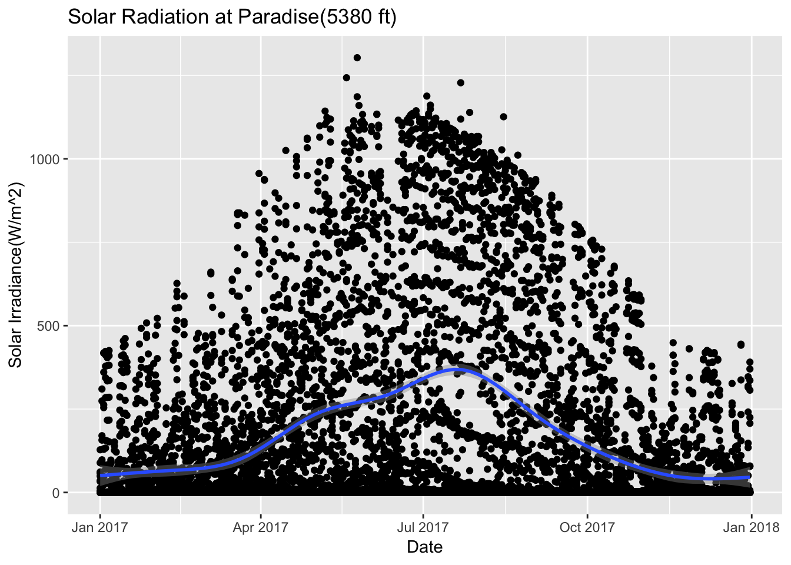

Chapter 8 Journal
Daily lab notes
library(ggplot2)
library(tidyverse)## ── Attaching packages ─────────────────────────────────── tidyverse 1.2.1 ──## ✔ tibble 1.4.1 ✔ purrr 0.2.4
## ✔ tidyr 0.7.2 ✔ dplyr 0.7.4
## ✔ readr 1.1.1 ✔ stringr 1.2.0
## ✔ tibble 1.4.1 ✔ forcats 0.2.0## ── Conflicts ────────────────────────────────────── tidyverse_conflicts() ──
## ✖ dplyr::filter() masks stats::filter()
## ✖ dplyr::lag() masks stats::lag()8.1 4-12-2018
8.1.1 ekoseminar
Urban ecosystems are undergoing evolution at a much faster pace than one would imagine. Thinking about mutation which introduce allele frequency key to heritable diversity ?
8.1.2 meeting with jhrl
Certain species do flower early - confirmed by JHRL. The poster we presented does make sense.
8.1.3 ekoclimate
The enregy budget of thr area increases if the type of the cover changes, i.e if it chabges from deciduous forest to crop/grassland then the net Long Wave radiation(flux?) increases. Long wave is the one that is reflected, so the area with a grass will absorb more heat through the day , and emilt radiation during the night? (Mire cooling ?). So, should we see more diurnal variation in crop/grasslands than forests ?. How should one charaterize the total energy flux on grasslands vs forests?
Shortware is the incoming radiation - i.e having a shorter wavelength, and when is reflected, it becomes long wave radiation. The longwave radiation emitted out is calculated by multipying Stephan Boltzman constant multiplied by epsilion(emissivity) and Temperature^4(Temperature of the object).
8.1.4 trenchR
Thermal conductance wrt to animals define the amount of heat which can escape out of animalds. It depends on the difference between the animal and the outside temperature and you multipy by the thickness(lambda) and a proportion of the surface area(true area exposed to solar radiation).
Surace area to calculate the exposure is related to the exposed area - tricky as animals come in all shapes, mostly cylindrical with a sphere head if land based.
8.2 4-13-2018
8.3 4-20-2008
Heat transfer coefficient for Lizards. It is linear with windspeeed, and slope changes when the lizard is parallel or transverse
8.4 4-23-2008
Get diurnal variation across 5 sites at Mt Rainier
#Load a file
Paradise_2017<- read.csv('./data/ParadiseWind_5380_feet_2017.csv')
CampMuir_2017<- read.csv('./data/CampMuir_10110_feet_2017.csv')
Sunriseupper_2017<- read.csv('./data/SunriseUpper_6880_feet_2017.csv')
Paradise_2017$date <- as.Date(Paradise_2017$Date.Time..PST., "%Y-%m-%d")
CampMuir_2017$date <- as.Date(CampMuir_2017$Date.Time..PST., "%Y-%m-%d")
Sunriseupper_2017$date <- as.Date(Sunriseupper_2017$Date.Time..PST., "%Y-%m-%d")
str(Paradise_2017)## 'data.frame': 8760 obs. of 8 variables:
## $ Date.Time..PST. : Factor w/ 8760 levels "2017-01-01 00:00",..: 8760 8759 8758 8757 8756 8755 8754 8753 8752 8751 ...
## $ Battery.Voltage..v. : num 13 13 12.4 12.9 12.9 ...
## $ Wind.Speed.Minimum..mph.: num 0 0 0 0.71 1.42 2.13 0 0 0 0.71 ...
## $ Wind.Speed.Average..mph.: num 1.68 1.68 1.6 2.23 2.76 ...
## $ Wind.Speed.Maximum..mph.: num 3.55 3.55 3.55 3.55 3.55 4.26 3.55 3.55 4.26 6.39 ...
## $ Wind.Direction..deg.. : num 21.04 6.89 19.41 26.65 16.74 ...
## $ Solar.Pyranometer..W.m2.: num 0 0 0 0 0 ...
## $ date : Date, format: "2017-12-31" "2017-12-31" ...Paradise_2017 %>% ggplot(aes(date,Solar.Pyranometer..W.m2.)) +geom_point() + stat_smooth(se = TRUE) + ggtitle("Solar Radiation at Paradise(5380 ft)")+ xlab("Date") + ylab("Solar Irradiance(W/m^2)")## `geom_smooth()` using method = 'gam' and formula 'y ~ s(x, bs = "cs")'
CampMuir_2017 %>% ggplot(aes(date,Solar.Pyranometer..W.m2.)) + geom_point() + stat_smooth(se = TRUE) + ggtitle("Solar Radiation at CampMuir(10110 ft)")+ xlab("Date") + ylab("Solar Irradiance(W/m^2)")## `geom_smooth()` using method = 'gam' and formula 'y ~ s(x, bs = "cs")'
Sunriseupper_2017 %>% ggplot(aes(date,Solar.Pyranometer..W.m2.)) + geom_point() + stat_smooth(se = TRUE) + ggtitle("Solar Radiation at Sunrise-Upper(6880 ft)")+ xlab("Date") + ylab("Solar Irradiance(W/m^2)")## `geom_smooth()` using method = 'gam' and formula 'y ~ s(x, bs = "cs")'
Feedback
Better to do it houry so that daily patterns do counfound it.